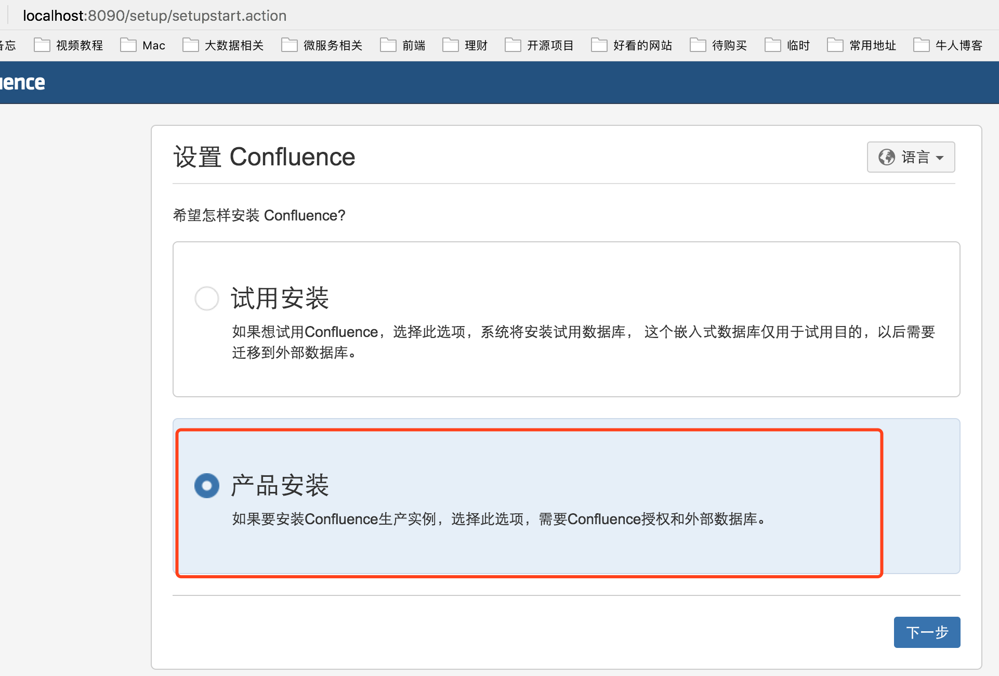
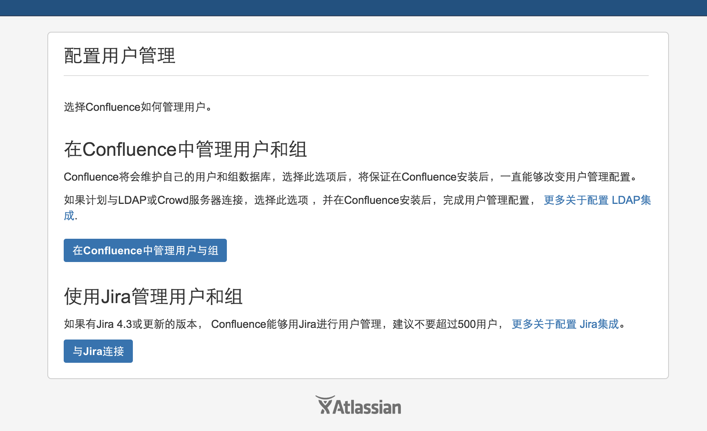

<!DOCTYPE HTML>
<html lang="zh-CN">
<head><meta name="generator" content="Hexo 3.8.0">
    <!--Setting-->
    <meta charset="UTF-8">
    <meta name="viewport" content="width=device-width, user-scalable=no, initial-scale=1.0, maximum-scale=1.0, minimum-scale=1.0">
    <meta http-equiv="X-UA-Compatible" content="IE=Edge,chrome=1">
    <meta http-equiv="Cache-Control" content="no-siteapp">
    <meta http-equiv="Cache-Control" content="no-transform">
    <meta http-equiv="pragma" content="no-cache">
    <meta http-equiv="Cache-Control" content="no-cache, must-revalidate">
    <meta http-equiv="expires" content="Mon Apr 06 2020 02:12:40 GMT+0800 (CST)">
    <meta name="renderer" content="webkit|ie-comp|ie-stand">
    <meta name="apple-mobile-web-app-capable" content="周立的博客 - 关注Spring Cloud、Docker">
    <meta name="apple-mobile-web-app-status-bar-style" content="black">
    <meta name="format-detection" content="telephone=no,email=no,adress=no">
    <meta name="browsermode" content="application">
    <meta name="screen-orientation" content="portrait">
    <meta name="theme-version" content="1.2.3">
    <meta name="root" content="/">
    
    <!--SEO-->

    <meta name="keywords" content="Confluence,破解">


    <meta name="description" content="
 Confluence可谓目前最强大的Wiki系统，但它是个收费软件。本文讲解如何安装、部署、破解Confluence，部署的环境是Docker。

WARNING
不建议大家在公司使用破解版，用收费版的吧^_^。如果不想掏钱，可以尝试开源的XWik ，功能也非常强大。
本文只提供破解的思路...">


<meta name="robots" content="all">
<meta name="google" content="all">
<meta name="googlebot" content="all">
<meta name="verify" content="all">
    <!--Title-->


<title>基于Docker安装、部署、破解Confluence 6.6图文教程 | 周立的博客 - 关注Spring Cloud、Docker</title>


    <link rel="alternate" href="../../atom.html" title="周立的博客 - 关注Spring Cloud、Docker" type="application/atom+xml">


    

    


<link rel="stylesheet" href="../../static/css/bootstrap.min-271a649e0635d6fa1b.css">
<link rel="stylesheet" href="../../static/css/font-awesome.min-ac2bebcf7fb5b26.css">
<link rel="stylesheet" href="../../static/css/style-6f3c140f6eee20e6591da00ec0.css">


    


    <script>
        var _hmt = _hmt || [];
        (function() {
            var hm = document.createElement("script");
            hm.src = "https://hm.baidu.com/hm.js?13766878cde148282622871dd245a973";
            var s = document.getElementsByTagName("script")[0];
            s.parentNode.insertBefore(hm, s);
        })();
    </script>


    

</head>

</html>
<!--[if lte IE 8]>
<style>
    html{ font-size: 1em }
</style>
<![endif]-->
<!--[if lte IE 9]>
<div style="ie">你使用的浏览器版本过低，为了你更好的阅读体验，请更新浏览器的版本或者使用其他现代浏览器，比如Chrome、Firefox、Safari等。</div>
<![endif]-->

<body>
    
    <nav class="main-navigation">
    <div class="container">
        <div class="row clearfix">
            <div class="col-md-12 column">
                <nav class="navbar navbar-default" style="background-color:#fff;border:0;margin-bottom:0" role="navigation">
                    <div class="navbar-header">
                        <button type="button" class="navbar-toggle" data-toggle="collapse" data-target="#navbar-collapse-1">
                            <span class="sr-only">切</span>
                            <span class="icon-bar"></span>
                            <span class="icon-bar"></span>
                            <span class="icon-bar"></span>
                        </button>
                        <a class="logo" href="../../index.html">
                            周立的博客
                        </a>
                    </div>

                    <div class="collapse navbar-collapse" style="border:0;" id="navbar-collapse-1">
                        <ul class="nav navbar-nav">
                            
                                
                                    <li>
                                        <a href="../../about.html" target="_blank">
                                            <i class="fa fa-user"></i>
                                            关于我
                                        </a>
                                    </li>
                                
                            
                                
                                    <li>
                                        <a href="../../archives.html" target="_blank">
                                            <i class="fa fa-archive"></i>
                                            归档
                                        </a>
                                    </li>
                                
                            
                                
                                    <li class="dropdown">
                                        <a href="#" class="dropdown-toggle" data-toggle="dropdown" data-hover="dropdown">
                                            <i class="fa fa-fire"></i>
                                            系列课程
                                            <strong class="caret"></strong>
                                        </a>
                                        <ul class="dropdown-menu">
                                            
                                                <li>
                                                    <a href="../../docker/00-docker-lession-index.html" target="_blank">
                                                        <i class="fa "></i>
                                                        Docker系列教程
                                                    </a>
                                                </li>
                                            
                                                <li>
                                                    <a href="../../spring-cloud/spring-cloud-index.html" target="_blank">
                                                        <i class="fa "></i>
                                                        Spring Cloud系列教程
                                                    </a>
                                                </li>
                                            
                                                <li>
                                                    <a href="../../spring-boot/spring-boot-index.html" target="_blank">
                                                        <i class="fa "></i>
                                                        Spring Boot系列教程
                                                    </a>
                                                </li>
                                            
                                        </ul>
                                    </li>
                                
                            
                                
                                    <li class="dropdown">
                                        <a href="#" class="dropdown-toggle" data-toggle="dropdown" data-hover="dropdown">
                                            <i class="fa fa-book"></i>
                                            开源书
                                            <strong class="caret"></strong>
                                        </a>
                                        <ul class="dropdown-menu">
                                            
                                                <li>
                                                    <a href="../../books/rocketmq.html" target="_blank">
                                                        <i class="fa fa-rocket"></i>
                                                        RocketMQ开发者指南
                                                    </a>
                                                </li>
                                            
                                                <li>
                                                    <a href="../../books/skywalking.html" target="_blank">
                                                        <i class="fa fa-skyatlas"></i>
                                                        Skywalking 6.2.0中文文档
                                                    </a>
                                                </li>
                                            
                                        </ul>
                                    </li>
                                
                            
                                
                                    <li class="dropdown">
                                        <a href="#" class="dropdown-toggle" data-toggle="dropdown" data-hover="dropdown">
                                            <i class="fa fa-cog"></i>
                                            工具
                                            <strong class="caret"></strong>
                                        </a>
                                        <ul class="dropdown-menu">
                                            
                                                <li>
                                                    <a href="../../tools/markdown2.html" target="_blank">
                                                        <i class="fa "></i>
                                                        微信排版工具2.0
                                                    </a>
                                                </li>
                                            
                                        </ul>
                                    </li>
                                
                            
                        </ul>
                        
                            <form id="search-form" class="navbar-form navbar-right">
                                <div class="form-group input-group">
                                    <input type="text" id="local-search-input" class="form-control" placeholder="搜我...">
                                    <span class="input-group-btn">
                                        <a class="btn btn-default">
                                            <i class="fa fa-search"></i>
                                        </a>
                                    </span>
                                </div>
                                <div id="local-search-result" class="local-search-result-cls"></div>
                            </form>
                        
                    </div>
                </nav>
            </div>
        </div>
    </div>
</nav>

    <a href="javascript:;" target="_blank">
        
    </a>


    <section class="content-wrap">
        <div class="container">
            <div class="row">
                <main class="col-md-8 main-content m-post">
                    

<p id="process"></p>
<article class="post">
    <div class="post-head">
        <h1 id="基于Docker安装、部署、破解Confluence 6.6图文教程">
            
                基于Docker安装、部署、破解Confluence 6.6图文教程
            
        </h1>
        <div class="post-meta">
    
        <span class="categories-meta fa-wrap">
            <i class="fa fa-folder-open-o"></i>
            <a class="category-link" href="../../categories/工作/index.html">工作</a>
        </span>
    

    
        <span class="fa-wrap">
            <i class="fa fa-tags"></i>
            <span class="tags-meta">
                
                    <a class="tag-link" href="javascript:;">Confluence</a> <a class="tag-link" href="../../tags/破解/index.html">破解</a>
                
            </span>
        </span>
    

    
        
        <span class="fa-wrap">
            <i class="fa fa-clock-o"></i>
            <span class="date-meta">2017/12/15</span>
        </span>
        
            <span class="fa-wrap">
                <i class="fa fa-eye"></i>
                <span id="busuanzi_value_page_pv"></span>
            </span>
        
    
</div>
        
        
    </div>
    
    <div class="post-body post-content" id="post-content">
        
    <div class="toc-article">
        <strong>
            目录
        </strong>
        <div class="toc-content">
            <ol class="toc"><li class="toc-item toc-level-2"><a class="toc-link" href="#WARNING"><span class="toc-text">WARNING</span></a></li><li class="toc-item toc-level-2"><a class="toc-link" href="#准备"><span class="toc-text">准备</span></a><ol class="toc-child"><li class="toc-item toc-level-3"><a class="toc-link" href="#Dockerfile"><span class="toc-text">Dockerfile</span></a></li><li class="toc-item toc-level-3"><a class="toc-link" href="#docker-compose-yml"><span class="toc-text">docker-compose.yml</span></a></li></ol></li><li class="toc-item toc-level-2"><a class="toc-link" href="#安装"><span class="toc-text">安装</span></a></li><li class="toc-item toc-level-2"><a class="toc-link" href="#破解验证"><span class="toc-text">破解验证</span></a></li><li class="toc-item toc-level-2"><a class="toc-link" href="#参考文档"><span class="toc-text">参考文档</span></a></li></ol>
        </div>
    </div>


        <blockquote>
<p> Confluence可谓目前最强大的Wiki系统，但它是个收费软件。本文讲解如何安装、部署、破解Confluence，部署的环境是Docker。</p>
</blockquote>
<h2 id="WARNING"><a href="#WARNING" class="headerlink" title="WARNING"></a>WARNING</h2><ul>
<li>不建议大家在公司使用破解版，用收费版的吧^_^。如果不想掏钱，可以尝试开源的<code>XWik</code> ，功能也非常强大。</li>
<li>本文只提供破解的思路及步骤，破解补丁 <code>atlassian-extras-decoder-v2-3.2.jar</code> 不提供，聪明如你，一定能在谷歌、百度、bing、ask上找到。</li>
</ul>
<p>最近公司想将Confluence迁到Docker环境，同时顺序想升级一下。虽然公司用的是收费版，不过我顺便也研究了下怎么破解。以下是步骤，所用版本是 <code>Confluence 6.6</code> 。</p>
<p>Confluence的破解比较简单，只需要替换JAR包 <code>atlassian-extras-decoder-v2-3.2.jar</code> 就可以了。</p>
<h2 id="准备"><a href="#准备" class="headerlink" title="准备"></a>准备</h2><h3 id="Dockerfile"><a href="#Dockerfile" class="headerlink" title="Dockerfile"></a>Dockerfile</h3><p>以下是Dockerfile。</p>
<figure class="highlight dockerfile"><table><tr><td class="gutter"><pre><span class="line">1</span><br><span class="line">2</span><br><span class="line">3</span><br><span class="line">4</span><br><span class="line">5</span><br><span class="line">6</span><br><span class="line">7</span><br><span class="line">8</span><br><span class="line">9</span><br></pre></td><td class="code"><pre><span class="line"><span class="keyword">FROM</span> atlassian/confluence-server</span><br><span class="line"><span class="keyword">MAINTAINER</span> 周立&lt;eacdy0000@<span class="number">126</span>.com&gt;</span><br><span class="line"><span class="comment"># 传入破解补丁</span></span><br><span class="line"><span class="keyword">ADD</span> crack/atlassian-extras-decoder-v2-3.2.jar $&#123;CONFLUENCE_INSTALL_DIR&#125;/confluence/WEB-INF/lib/atlassian-extras-decoder-v2-3.2.jar</span><br><span class="line"># 设置文件属组</span><br><span class="line">RUN chown -R $&#123;RUN_USER&#125;:$&#123;RUN_GROUP&#125; $&#123;CONFLUENCE_INSTALL_DIR&#125;/confluence/WEB-INF/lib/atlassian-extras-decoder-v2-3.2.jar</span><br><span class="line"></span><br><span class="line">CMD ["/entrypoint.sh", "-fg"]</span><br><span class="line">ENTRYPOINT ["/sbin/tini", "--"]</span><br></pre></td></tr></table></figure>
<h3 id="docker-compose-yml"><a href="#docker-compose-yml" class="headerlink" title="docker-compose.yml"></a>docker-compose.yml</h3><p>为了让配置更加简单，我们使用Docker Compose编排Confluence。这边提供下docker-compose.yml</p>
<figure class="highlight yaml"><table><tr><td class="gutter"><pre><span class="line">1</span><br><span class="line">2</span><br><span class="line">3</span><br><span class="line">4</span><br><span class="line">5</span><br><span class="line">6</span><br><span class="line">7</span><br><span class="line">8</span><br><span class="line">9</span><br><span class="line">10</span><br><span class="line">11</span><br><span class="line">12</span><br><span class="line">13</span><br><span class="line">14</span><br><span class="line">15</span><br><span class="line">16</span><br><span class="line">17</span><br><span class="line">18</span><br><span class="line">19</span><br><span class="line">20</span><br></pre></td><td class="code"><pre><span class="line"><span class="attr">version:</span> <span class="string">'2'</span></span><br><span class="line"></span><br><span class="line"><span class="attr">services:</span></span><br><span class="line"><span class="attr">  mysql:</span></span><br><span class="line"><span class="attr">    image:</span> <span class="attr">mysql:5.7</span></span><br><span class="line"><span class="attr">    volumes:</span></span><br><span class="line"><span class="bullet">      -</span> <span class="string">./mysql/:/etc/mysql/conf.d/</span></span><br><span class="line"><span class="bullet">      -</span> <span class="string">./db_data:/var/lib/mysql</span></span><br><span class="line"><span class="attr">    restart:</span> <span class="string">always</span></span><br><span class="line"><span class="attr">    ports:</span></span><br><span class="line"><span class="bullet">      -</span> <span class="string">"3306:3306"</span></span><br><span class="line"><span class="attr">    environment:</span></span><br><span class="line"><span class="attr">      MYSQL_ROOT_PASSWORD:</span> <span class="string">root123</span></span><br><span class="line"><span class="attr">      MYSQL_DATABASE:</span> <span class="string">confluence</span></span><br><span class="line"><span class="attr">      MYSQL_USER:</span> <span class="string">confluence</span></span><br><span class="line"><span class="attr">      MYSQL_PASSWORD:</span> <span class="string">confluence123</span></span><br><span class="line"><span class="attr">  confluence:</span></span><br><span class="line"><span class="attr">    build:</span> <span class="string">.</span></span><br><span class="line"><span class="attr">    ports:</span></span><br><span class="line"><span class="bullet">      -</span> <span class="string">"8090:8090"</span></span><br></pre></td></tr></table></figure>
<p>MySQL所使用的配置文件<code>my.cnf</code> ：</p>
<figure class="highlight ini"><table><tr><td class="gutter"><pre><span class="line">1</span><br><span class="line">2</span><br><span class="line">3</span><br><span class="line">4</span><br><span class="line">5</span><br><span class="line">6</span><br><span class="line">7</span><br><span class="line">8</span><br><span class="line">9</span><br><span class="line">10</span><br></pre></td><td class="code"><pre><span class="line"><span class="section">[client]</span></span><br><span class="line"><span class="attr">default-character-set</span> = utf8</span><br><span class="line"></span><br><span class="line"><span class="section">[mysql]</span></span><br><span class="line"><span class="attr">default-character-set</span> = utf8</span><br><span class="line"></span><br><span class="line"><span class="section">[mysqld]</span></span><br><span class="line"><span class="attr">character_set_server</span> = utf8</span><br><span class="line"><span class="attr">collation-server</span> = utf8_bin</span><br><span class="line"><span class="attr">transaction_isolation</span> = READ-COMMITTED</span><br></pre></td></tr></table></figure>
<p>需要注意的是，Confluence需要使用<code>utf8_bin</code> ，并将事务隔离策略设为<code>READ-COMMITTED</code> （B.T.W，扩展一下，大家还记得Spring的事务传播特性吧？如果不记得，请打开浏览器，搜一下）</p>
<h2 id="安装"><a href="#安装" class="headerlink" title="安装"></a>安装</h2><p>安装Confluence比较简单，以下是步骤：</p>
<ol>
<li><p>如下图，在右上角选择<code>中文</code> ，然后就会变成中文界面了。</p>
<p></p>
<p>选择产品安装，并点击下一步。</p>
</li>
<li><p>安装插件。安装你想要的插件。看着办吧，我实验的时候没有安装。</p>
<p></p>
<p>勾选想要安装的插件，并点击下一步：</p>
</li>
<li><p>此时将会出现类似如下的界面，让我们输入授权码。这个没有啊……</p>
<p></p>
</li>
<li><p>点击上图中的<a href="javascript:;" target="_blank" rel="noopener">获得试用授权</a> 按钮，跳转到<code>Atlassian</code> 的官方网站，并注册一个账号，将会显示类似如下的界面：</p>
<p></p>
<p>其中Server ID输入上一步中的Server ID即可，输入后，点击Generate License。</p>
</li>
<li><p>点击后将会弹出类似如下的界面</p>
<p></p>
</li>
<li><p>生成的License Key贴到第三步中，并点击下一步，这样将会显示类似如下的界面。</p>
<p></p>
</li>
<li><p>配置数据库，账号/密码是confluence/confluence123</p>
<p></p>
</li>
<li><p>配置管理账户</p>
<p></p>
</li>
<li><p>点击在Confluence中管理用户与组，然后输入你的管理员账号密码，Confluence就安装完成了。 </p>
<p>​</p>
</li>
</ol>
<h2 id="破解验证"><a href="#破解验证" class="headerlink" title="破解验证"></a>破解验证</h2><ol>
<li><p>点击右上角的<code>一般配置</code> ，如下图：</p>
<p></p>
</li>
<li><p>如果能够看到类似如下的页面，说明破解成功：</p>
<p></p>
</li>
</ol>
<h2 id="参考文档"><a href="#参考文档" class="headerlink" title="参考文档"></a>参考文档</h2><p><a href="javascript:;" target="_blank" rel="noopener">http://chenjiangtao.com/blog/2017/confluence%E7%A0%B4%E8%A7%A3.html</a></p>

        
    </div>
    
    <div class="post-footer">
        <div class="col-sm-10">
            <div>
                <b>本文链接</b>：<a href="" target="_blank">基于Docker安装、部署、破解Confluence 6.6图文教程</a>
            </div>
            <div>
                
                    转载声明：本博客由周立创作，采用 <a href="javascript:;" target="_blank"> CC BY 3.0 CN </a> 许可协议。可自由转载、引用，但需署名作者且注明文章出处。如转载至微信公众号，请在文末添加作者公众号二维码。
                
            </div>
            <div>
                
            </div>
        </div>
        <div class="col-sm-2">
            
        </div>
    </div>
</article>

<div class="article-nav prev-next-wrap clearfix">
    
        <a target="_blank" href="../../spring-cloud/edgware-new-artifact-id/index.html" class="pre-post btn btn-default" title="Spring Cloud Edgware新特性之六：Artifact ID变更">
            <i class="fa fa-angle-left fa-fw"></i><span class="hidden-lg">上一篇</span>
            <span class="hidden-xs">Spring Cloud Edgware新特性之六：Artifact ID变更</span>
        </a>
    
    
        <a target="_blank" href="../../spring-cloud-sum/spring-cloud-concurrent/index.html" class="next-post btn btn-default" title="Spring Cloud各组件调优参数">
            <span class="hidden-lg">下一篇</span>
            <span class="hidden-xs">Spring Cloud各组件调优参数</span><i class="fa fa-angle-right fa-fw"></i>
        </a>
    
</div>


    <div id="comments">
        
   <p>评论系统未开启，无法评论！</p>

    </div>


                </main>
                
    <aside class="col-md-4 sidebar">
        
        <div class="widget about-me">
    <div class="row">
        <div class="col-md-5">
            
        </div>
        <div class="col-md-7">
            <a class="series-a" href="javascript:void(0)">公众号</a>
            <ul>
                <li>• 技术干货推送</li>
                <li>• 免费资料领取</li>
                <li><b>• 扫码领取更多惊喜</b></li>
            </ul>
        </div>
    </div>
    
        <div class="row">
            <div class="col-md-5">
                
            </div>
            <div class="col-md-7">
                <a class="series-a" href="javascript:void(0)">小程序</a>
                <ul>
                    <li>• 原创笔记</li>
                    <li>• 独家心法</li>
                    <li><b>• 扫码领取</b></li>
                </ul>
            </div>
        </div>
    
</div>


        
        
    <div class="ad">
        <div class="row">
            <div class="col-md-12">
                <a href="javascript:;" rel="nofollow" target="_blank">
                    
                </a>
            </div>
        </div>
    </div>


        
        <div class="widget">
    <div class="row">
        <div class="col-md-3">
            
        </div>
        <div class="col-md-9">
            <a class="series-a" target="_blank" href="../../spring-cloud/spring-cloud-index.html">Spring Cloud系列教程</a>
            <p>全面、通俗易懂的Spring Cloud教程</p>
        </div>
    </div>
    <div class="row">
        <div class="col-md-3">
            
        </div>
        <div class="col-md-9">
            <a class="series-a" target="_blank" href="javascript:;">Spring Cloud Alibaba视频教程</a>
            <p>全网唯一，你值得拥有</p>
        </div>
    </div>
    <div class="row">
        <div class="col-md-3">
            
        </div>
        <div class="col-md-9">
            <a class="series-a" target="_blank" href="../../docker/00-docker-lession-index.html">Docker系列教程</a>
            <p>Docker系列</p>
        </div>
    </div>
    <div class="row">
        <div class="col-md-3">
            
        </div>
        <div class="col-md-9">
            <a class="series-a" target="_blank" href="../../spring-boot/spring-boot-index.html">Spring Boot系列教程</a>
            <p>Boot是基石...</p>
        </div>
    </div>
</div>


        
        
    <div class="widget">
        <h3 class="title">分类</h3>
        <ul class="category-list"><li class="category-list-item"><a class="category-list-link" href="javascript:;"><i class="fa" aria-hidden="true">Docker</i></a><span class="category-list-count">31</span></li><li class="category-list-item"><a class="category-list-link" href="javascript:;"><i class="fa" aria-hidden="true">Kubernetes</i></a><span class="category-list-count">2</span></li><li class="category-list-item"><a class="category-list-link" href="javascript:;"><i class="fa" aria-hidden="true">Spring Boot</i></a><span class="category-list-count">6</span></li><li class="category-list-item"><a class="category-list-link" href="javascript:;"><i class="fa" aria-hidden="true">Spring Cloud</i></a><span class="category-list-count">94</span></li><li class="category-list-item"><a class="category-list-link" href="javascript:;"><i class="fa" aria-hidden="true">Spring Cloud Alibaba</i></a><span class="category-list-count">16</span></li><li class="category-list-item"><a class="category-list-link" href="javascript:;"><i class="fa" aria-hidden="true">Spring Cloud Stream</i></a><span class="category-list-count">1</span></li><li class="category-list-item"><a class="category-list-link" href="../../categories/其他/index.html"><i class="fa" aria-hidden="true">其他</i></a><span class="category-list-count">13</span></li><li class="category-list-item"><a class="category-list-link" href="../../categories/安装教程/index.html"><i class="fa" aria-hidden="true">安装教程</i></a><span class="category-list-count">7</span></li><li class="category-list-item"><a class="category-list-link current" href="../../categories/工作/index.html"><i class="fa" aria-hidden="true">工作</i></a><span class="category-list-count">20</span></li></ul>
    </div>


        
        
        
        

        
    </aside>

            </div>
        </div>
    </section>
    <footer class="main-footer">
    <div class="container">
        <div class="row">
        </div>
    </div>
</footer>

<a id="back-to-top" class="icon-btn hide">
	<i class="fa fa-chevron-up"></i>
</a>


    <div class="copyright">
    <div class="container">
        <div class="row">
            <div class="col-sm-12">
                <div class="busuanzi">
    
        访问量:
        <strong id="busuanzi_value_site_pv">
            <i class="fa fa-spinner fa-spin"></i>
        </strong>
        &nbsp; | &nbsp;
        访客数:
        <strong id="busuanzi_value_site_uv">
            <i class="fa fa-spinner fa-spin"></i>
        </strong>
        &nbsp; <strong>Since 2018-12-26</strong>
    
</div>

            </div>
            <div class="col-sm-12">
                <span>Copyright &copy; 2017
                </span> |
                <span>
                    Powered by <a href="javascript:;" class="copyright-links" target="_blank" rel="nofollow">Hexo</a>
                </span> |
                <span>
                    Theme by <a href="javascript:;" class="copyright-links" target="_blank" rel="nofollow">ITMuch</a>
                </span>
            </div>
        </div>
    </div>
</div>

<script src="../../static/js/jquery.min.js"></script>
<script src="../../static/js/bootstrap.min.js"></script>
<script src="../../static/js/bootstrap-hover-dropdown.min.js"></script>

    <script src="../../static/js/search-3f4fbd0557c869ca0516ebb5f.js"></script>


    <script async="" src="../../static/js/busuanzi.pure.mini.js"></script>


<script src="../../static/js/app-da10bb3b2ae5c8348d2bd2cc3faf.js"></script>


</body>
